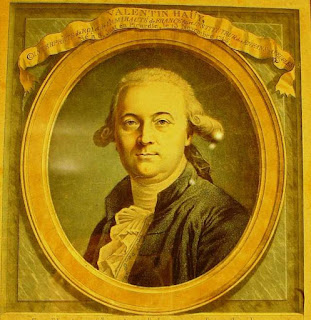

A lo largo de la historia, el acceso a la información ha sido un desafío significativo para las personas ciegas. Desde los tiempos antiguos, las sociedades han encontrado formas creativas y adaptativas para permitir que las personas sin visión participen en la vida cultural, educativa y social.
En las civilizaciones antiguas, la escritura estaba reservada principalmente para la élite, y la mayoría de la información se transmitía de forma oral. Sin embargo, hay ejemplos fascinantes de accesibilidad para personas ciegas. En el antiguo Egipto, los sacerdotes que eran ciegos o tenían discapacidad visual usaban el "escritura jeroglífica" para aprender a través del tacto. Las inscripciones en relieve eran comunes, lo que permitía a estos sacerdotes “leer” utilizando sus dedos.
En la antigua Grecia, filósofos como Aristóteles y Platón discutían sobre la naturaleza del conocimiento y la percepción. Aunque no existían sistemas formales para la lectura en braille, la oralidad y la memorización eran técnicas fundamentales. Las personas ciegas a menudo se convirtieron en narradores, manteniendo viva la tradición oral y asegurando que el conocimiento se transmitiera de generación en generación.
Con la llegada de la Edad Media, la alfabetización comenzó a crecer, pero las personas ciegas todavía enfrentaban grandes obstáculos. Los monasterios eran centros de conocimiento, donde los monjes copiaban libros a mano. A pesar de la exclusividad del acceso a la escritura, algunas personas ciegas lograron ser educadas a través de la enseñanza oral y la repetición.
Durante el Renacimiento, aunque la imprenta revolucionó el acceso a la información, las personas ciegas seguían sin tener acceso a textos impresos. Sin embargo, surgieron formas innovadoras de comunicación. Los instrumentos musicales, por ejemplo, eran un medio crucial para la expresión y la educación de las personas ciegas, permitiéndoles participar en la vida cultural de su época.
En el siglo XVIII, empezaron a surgir organizaciones que se dedicaban a la educación de personas ciegas. En 1784, el poeta y educador francés Jacques van Langenhove fundó la primera escuela para ciegos en Francia, que sirvió como modelo para otras instituciones. Esta escuela no solo enseñaba habilidades prácticas, sino que también introdujo a los estudiantes en la literatura y la filosofía a través de métodos orales.
A pesar de estas iniciativas, el acceso a la información seguía siendo limitado. Los textos impresos seguían siendo inaccesibles, y las personas ciegas dependían en gran medida de la memoria y la transmisión oral para obtener información. En este contexto, los ciegos desarrollaron habilidades excepcionales en la escucha y la memorización, lo que les permitió mantener un alto nivel de conocimiento a pesar de las limitaciones.
A medida que se acercaba el siglo XIX, comenzaron a aparecer métodos alternativos para la lectura. Por ejemplo, el "sistema de letras puntiagudas" se utilizó en algunos lugares para ayudar a las personas ciegas a identificar letras y palabras. Sin embargo, estos métodos eran rudimentarios y carecían de un sistema uniforme que facilitara la lectura de libros completos.
Durante este tiempo, surgieron varias organizaciones y movimientos dedicados a mejorar la educación y el acceso a la información para personas ciegas. Se llevaron a cabo conferencias y encuentros donde educadores, familias y personas ciegas discutían sobre las mejores prácticas y métodos de enseñanza. Vámos a destacar dos figuras importantes en el nacimiento del braille.
Nació el 13 de noviembre de 1745-París, Isla de Francia, y murió el 19 de marzo de 1822.
Fué uno de los primeros en interesarse en la integración socio-cultural de los invidentes.
Fundó en París la primera escuela para ciegos, germen del "Institut national des jeunes aveugles" (Instituto nacional de jóvenes ciegos). Puso a punto los primeros materiales de lectura para invidentes y se dedicó a promover su inserción en el trabajo.

Su gran idea fue el modo de hacer leer a los ciegos mediante caracteres especiales: usando las letras del alfabeto latino normal (pero con un tamaño muy superior) grabadas en relieve en hojas de papel grueso. Con este método de letras en relieve.
En 1786 se fundó la "Institution des Enfants Aveugles" (Institución de Niños Ciegos). Su objetivo era la de instruir a los alumnos y enseñarles algún trabajo manual: hilatura, impresión tipográfica..
De la Serre Nació el 18 de mayo de 1767 - 29 de abril de 1841) fue un militar y aventurero francés obsesionado por los lenguajes codificados y famoso por inventar el código de lectura que estudió y en el que se basó Louis Braille para crear su famoso sistema de lectura para invidentes.

Su sistema se basaba en una cuadrícula de 6x6 en la que cada cuadro correspondía a un fonema determinado en francés. Asimismo, en cada cuadro venían representadas dos columnas paralelas de un máximo de 6 puntos cada una. La primera de estas columnas representaba la fila de la cuadrícula y la segunda representaba la columna de la cuadrícula.

En 1819, en el Museo de la Industria de París, durante una demostración de su sistema y de una máquina de su invención, se dio cuenta de que los invidentes podrían beneficiarse de su alfabeto. Hasta la fecha, el aprendizaje de la lectura para invidentes seguía las pautas del sistema inventado por Valentin Haüy, basado en la representación de los mismos caracteres que utilizaban las personas videntes, realizados en relieve y de mayores dimensiones.